Le Tapis Vert
Les jeux de cartes et de société qu'on sort le dimanche, réunis sur un seul tapis : 24 classiques, à jouer seul contre l'ordinateur, à plusieurs sur le même écran, ou en ligne avec un ami. Sans publicité et sans compte à créer. The card and board games you bring out on a Sunday, gathered on one green table: 24 classics to play solo against the computer, with friends on the same screen, or online with a friend. No ads, no account to create.
Vingt-quatre jeux classiques, un seul tapis.Twenty-four classic games, one green table.
Une partie de Belote avec la famille, un Solitaire au calme, un Quatre en ligne entre deux cafés. Le Tapis Vert rassemble les grands classiques des cartes, du plateau et de la réflexion, avec leurs vraies règles et des adversaires qui jouent vraiment. A game of Belote with the family, a quiet Solitaire, Four in a Row between two coffees. Le Tapis Vert gathers the great classics of cards, boards and puzzles, with their real rules and opponents that really play.
Chaque partie terminée rapporte des jetons, même perdue, et les jetons débloquent de nouveaux jeux. Ceux qui préfèrent peuvent tout ouvrir d'un coup avec un achat unique, entièrement facultatif. Every finished game earns chips, even a lost one, and chips unlock new games. Those who prefer can open everything at once with a single, entirely optional purchase.
CapturesScreenshots
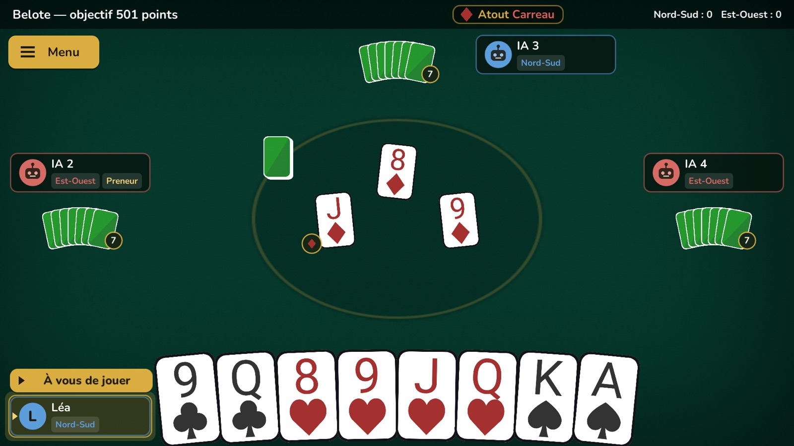
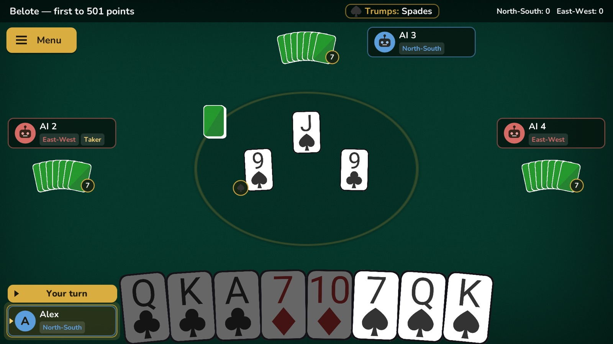
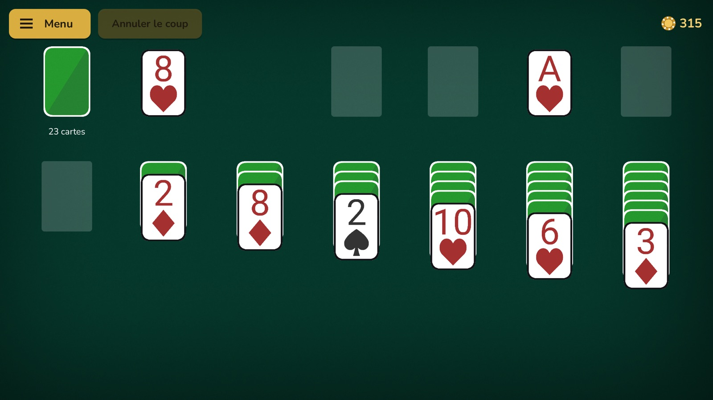
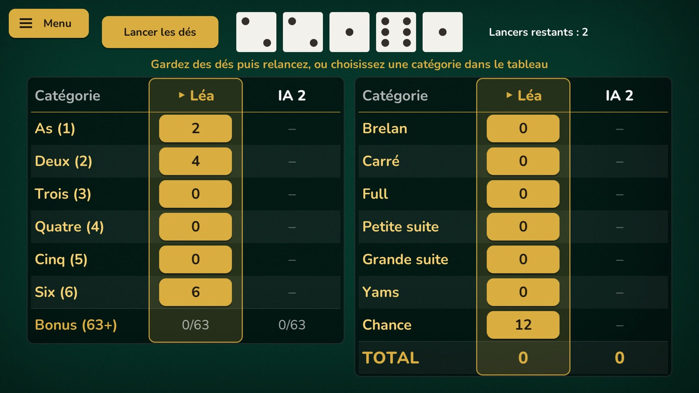
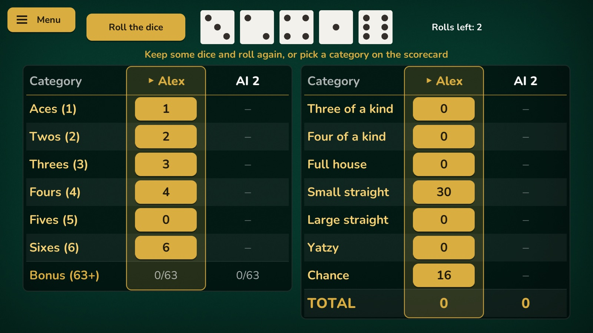
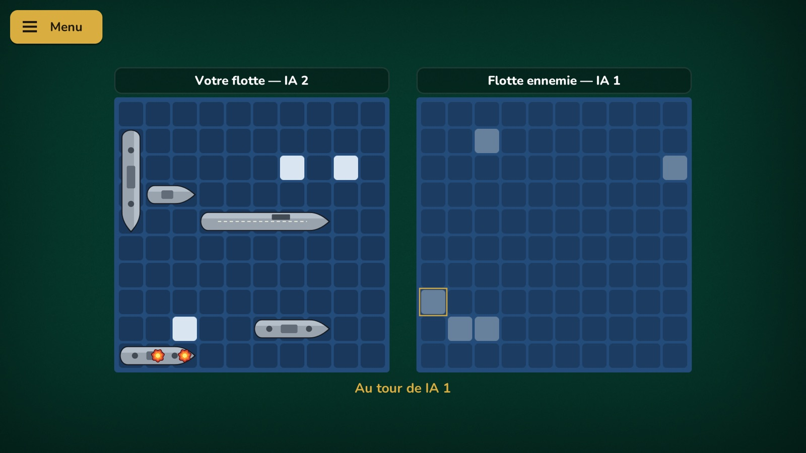
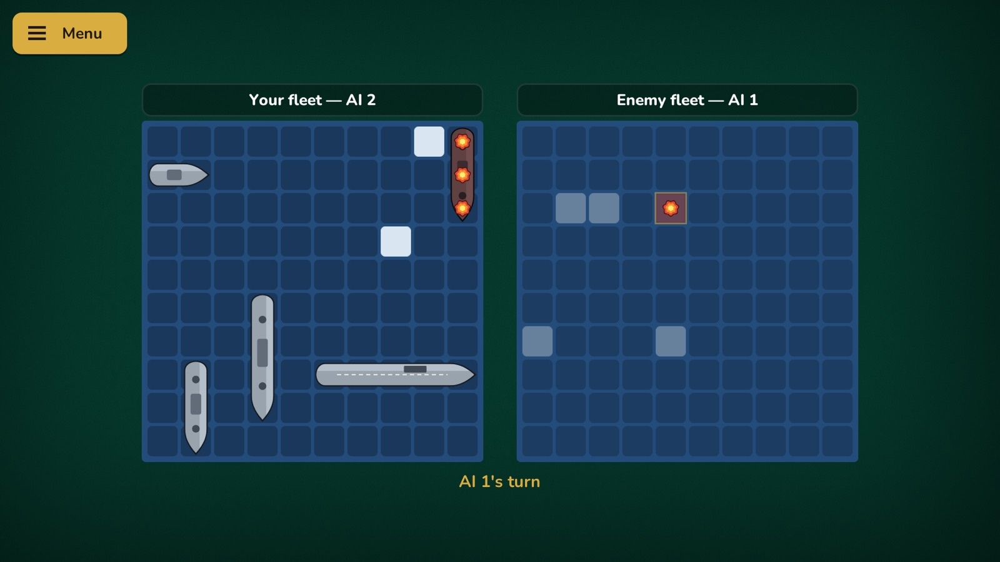
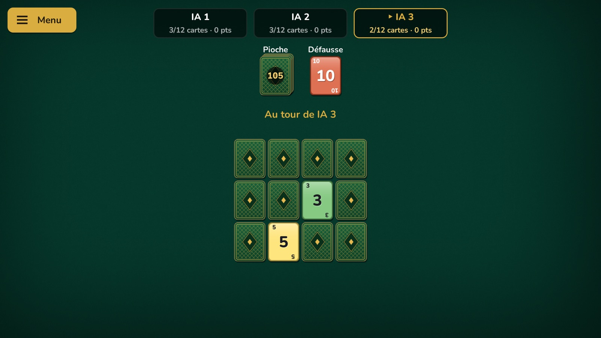
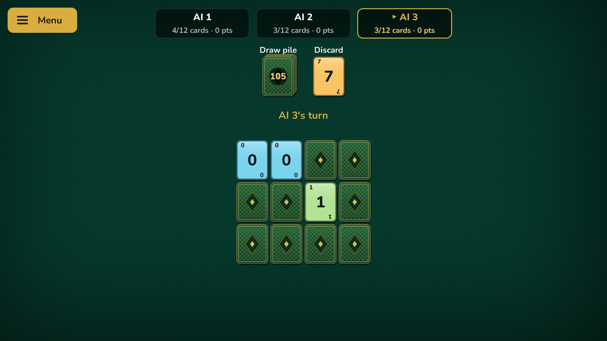
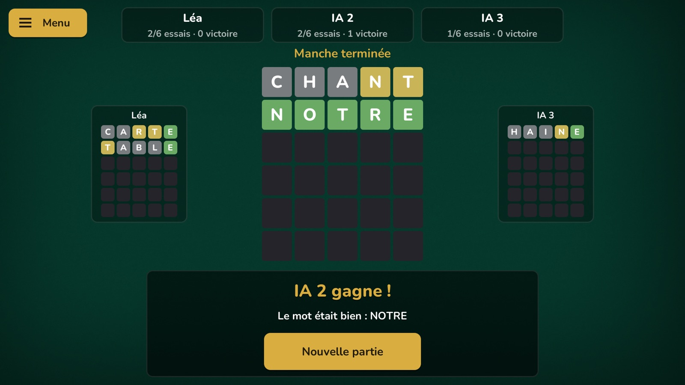
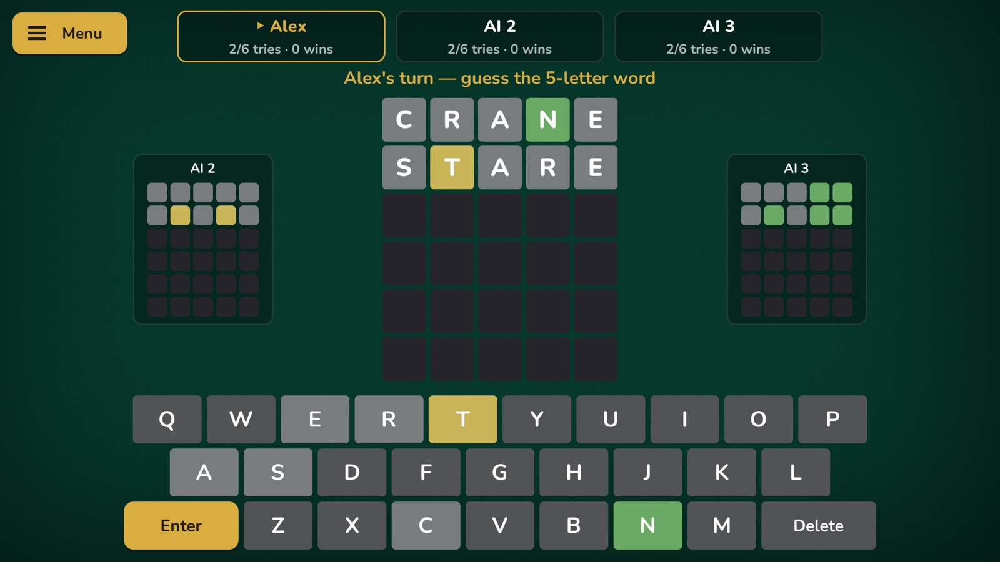
En brefAt a glance
FAQ
Le jeu est-il vraiment gratuit ?Is the game really free?
Oui. Plusieurs jeux sont ouverts dès le départ, les autres se débloquent avec les jetons gagnés en jouant. L'achat « Tout débloquer » fait gagner du temps, rien de plus. Il n'y a ni publicité, ni abonnement, ni pack de jetons à acheter.Yes. Several games are open from the start, the others unlock with the chips you win by playing. The "Unlock everything" purchase saves time, nothing more. There are no ads, no subscription and no chip packs for sale.
Faut-il créer un compte ?Do I need an account?
Non. Votre progression reste sur votre téléphone. Le détail est dans la politique de confidentialité.No. Your progress stays on your phone. The details are in the privacy policy.
Peut-on jouer à plusieurs ?Can several people play?
Oui : jusqu'à quatre sur le même écran, en se passant le téléphone, ou en ligne avec un ami pour l'Ascenseur et le Huit Américain. Les places libres sont tenues par l'ordinateur.Yes: up to four on the same screen, passing the phone around, or online with a friend for Up & Down the River and Crazy Eights. Empty seats are taken by the computer.
Une version iPhone ou PC ?An iPhone or PC version?
Le jeu sort d'abord sur Android. Une version PC est en préparation ; rien n'est promis pour iPhone aujourd'hui.The game comes to Android first. A PC version is in the works; nothing is promised for iPhone today.
Une idée, un bug, une règle qui diffère de chez vous ?An idea, a bug, a house rule that differs?
Écrivez-moi à petitvaisseau.studio@gmail.com : je lis tout et je réponds moi-même.Write to me at petitvaisseau.studio@gmail.com: I read everything and answer myself.